A gyermekekhez kapcsolódsz
A kórházi látogatásokon játszotok, tanultok, alkottok vagy egyszerűen beszélgettek: amihez az adott gyermeknek éppen kedve és lehetősége van.

Kinek szól?Lehetsz közgazdász, mérnök, pedagógia vagy egészségügyi hallgató, nem a szakod dönti el, hogy jó Amigo leszel-e.
Nem kell kész tudással vagy gyermekekkel szerzett tapasztalattal érkezned. Fontosabb, hogy kíváncsi legyél, tudj figyelni, vállald a rendszerességet, és merj segítséget kérni, amikor bizonytalan vagy.
Amigónak lenni egyszerre jelent felelősséget, közös élményeket és egy olyan közösséget, ahol számíthattok egymásra.

A kórházi látogatásokon játszotok, tanultok, alkottok vagy egyszerűen beszélgettek: amihez az adott gyermeknek éppen kedve és lehetősége van.
A kórházi bevetések és online foglalkozások mellett az Amigosban új barátokat, közös programokat és támogató közeget is találhatsz.
Megtanulsz különböző emberekhez kapcsolódni, csapatban dolgozni, váratlan helyzetekhez alkalmazkodni és felelősséget vállalni. Ezek a tapasztalatok az egyetemen, a munkában és a hétköznapokban is hasznodra válnak.
Amigónak lenni nem alkalmi program. Részt kell venned a felkészítéseken és bevetéseken, be kell tartanod a kórházi és gyermekvédelmi szabályokat, és időben jelezni, ha segítségre van szükséged.
Négy Amigo arról, hogyan kezdték, mit kaptak a közösségtől, és milyen egy-egy kórházi délután.
A felvételi két körből áll. Az űrlap kitöltése után e-mailben kapsz egy írásbeli feladatot. Ha továbbjutsz, beszélgetésre hívunk, hogy még jobban megismerjük egymást.
Nincsenek rossz válaszok – rád és a gondolataidra vagyunk kíváncsiak. Figyelj az e-mailben jelzett lépésekre és határidőkre.
Évente kétszer, augusztusban és januárban tudsz Amigónak jelentkezni. Ha szeretnél értesülni a következő féléves jelentkezési időszakról, add meg adataidat.


Tudd meg, hogyan válhatsz te is a közösség részévé!